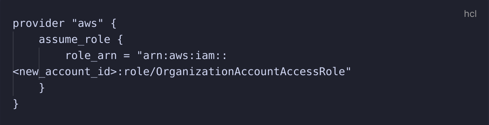
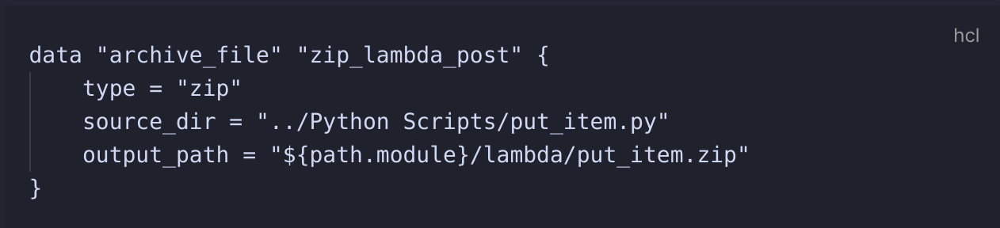
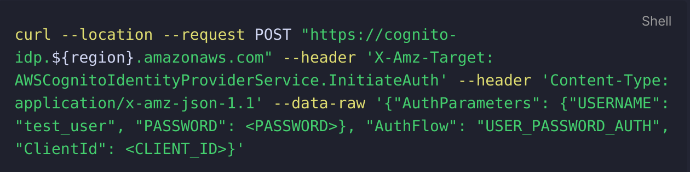
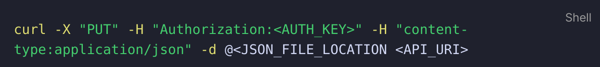
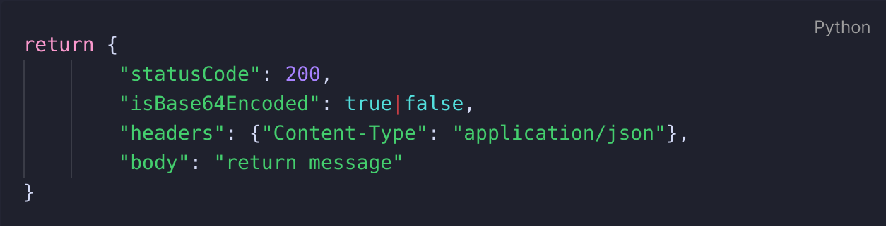

Creating a serverless API
Project Overview
The purpose of this project is to create a serverless API that can allow for basic CRUD operations, using lambda functions written in Python which calls to a basic DynamoDB table, and restricting access to API through the use of an API key.

Project Outcome
By the end of the project I should gain a decent understanding on how to configure API gateway, including the ability to create a RESTful API including documentation on Swagger.
Project Outputs
- Terraform Scripts which contains all AWS resources provisioned
- Python script for all relevant lambda functions
- Swagger YAML configuration file
- Notes on API Gateway best practices and architectural considerations
Out of Scope for this project
- Updating existing items using the API - examples covered by GET, PUT and DELETE
- Using Vault/KMS secrets to protect Cognito credentials - that is coming in another project!
- Utilising full RESTful practices
Take-aways from the project
Creating accounts and provisioning resources in Terraform
It currently doesn't seem to be possible to create a new AWS account and provision the necessary resources in the same Terraform file, meaning you need to create the AWS account first in one folder, and then in the main terraform configuration, pass in the following:

The account id can be easily found by logging into the aws console and getting the account id from there, although I imagine you could probably log the output of the account creation to a file and have the
new_account_id reference that file. For ease, I have not done that here.
Packaging Lambda Functions
Lambda functions have to be zipped! So that means when creating a lambda function and you're referencing a separate file, you need to create a data source similar to the following:

In the lambda resource as well, you need to define the handler, which is the name of the main function that will be run by Lambda once triggered.
Get Items
Within DynamoDB, there are 2 methods of retrieving multiple items from a table,
Query and Scan. For the sake of this project and to keep in line with the AWS guide that I'm using as a benchmark, my GET /items call will just run a scan command with no filters and return everything, as the dataset will be low enough not to matter. General Terraform Cleanliness
As it's been a while since I've used Terraform, my primary focus has been on getting functional and working code to get the relevant resources provisioned, even if that means that I'm not entirely following Terraform best practices, or using the full capabilities of Terraform. This means that for the likes of API Gateway there is a lot of the same resources being reused. It wasn't a primary goal to create amazing Terraform code, but to create a packaged environment that contains everything needed.
Understanding the API Requests - Authentication request to Cognito
In order to create the authentication request with Cognito I used the below request which I saw whilst following Andrew Tarry's guide on integrating Cognito with API Gateway:

The Client ID was originally a bit of a challenge to identify until I found it under the "user pool app client" section of the user pool and then I was able to find the necessary attribute that could be outputted in my terraform script.
This then provided a massive long authentication token of which I would only need the authenticator token which I would then pass into my API gateway request, which consisted of the following:

This then provided a massive long authentication token of which I would only need the authenticator token which I would then pass into my API gateway request, which consisted of the following:
Understanding the API Requests - Lambda's Cryptic Error Messages
Around 50% of my time spent on this project was on debugging how my request was being sent from API Gateway to Lambda due to employing the Lambda Proxy integration, as that impacted whether the
Once that was fixed, and I was able to get
This was a big learning exercise as the error messages being provided by Python / Lambda weren't particularly helpful, and in the case of my purposely including an object in the request that didn't hold a 'name' value, the error message that I received was simply "The Lambda function returned the following error: 'name'" which was originally quite complexing. This may have been down to how I configured the python script however it's really brought home how important graceful error handling is!
json.loads() or json.dumps() method would be applicable as originally I was getting error messages for both. After much research I realised that I didn't include the content-type:application/json header and therefore the json file wasn't being formatted in the correct way for Lambda to be able to deal with.
Once that was fixed, and I was able to get
json.loads() returning properly where I could then focus on the next issue being configuring the return response properly.
This was a big learning exercise as the error messages being provided by Python / Lambda weren't particularly helpful, and in the case of my purposely including an object in the request that didn't hold a 'name' value, the error message that I received was simply "The Lambda function returned the following error: 'name'" which was originally quite complexing. This may have been down to how I configured the python script however it's really brought home how important graceful error handling is!
Lambda vs Lambda Proxy Integration - Wrapping my head round the difference
When I was researching possible solutions for these error messages, a common theme that came up time and time again was the type of integration I was using, as it had a big impact into how to format your Lamdba function accordingly. As I was using this AWS Guide as a baseline I was using the Lambda Proxy integration, which meant I had to be more considered in how my Lambda function was formatted, especially for the return response below.
Lambda vs Lambda Proxy - Formatting the Return Response
As a result of using the Lambda Proxy integration, I learned that it then has certain ramifications for how the return response should be configured to correctly pass back into API Gateway to be returned to the client, with the layout being as follows:

In prior Lambda functions I was used to
return being relatively free to include whatever you feel is a necessary response for the user, and so to start off with I was just passing in a {"statusCode":200} value, before realising that API Gateway expected the above response format from Lambda. After some minor research to find the solution I was able to correct it and my code was correctly working.
Configuring Log Groups
Once I deployed my lambda functions I quickly learned the most important aspect element that I missed was a way of being able to view the results of any API calls beyond
Where I ran into a bit of an issue was working out what values I wanted to view from the logs, in the end I was able to get what I needed from the integration error and event ID values so I used those, but I appreciate a lot more is available that would be better suited for a more standard use case and not just my basic bug fixing.
{'Message':'Internal Server Error'}. After some digging I found a tutorial on how to enable cloudwatch log groups which would enable me to actually view the error messages being generated by Lambda.
Where I ran into a bit of an issue was working out what values I wanted to view from the logs, in the end I was able to get what I needed from the integration error and event ID values so I used those, but I appreciate a lot more is available that would be better suited for a more standard use case and not just my basic bug fixing.
Lambda and DynamoDB
The smoothest part of the process which actually didn't require any debugging was the calls that Lambda were making to DynamoDB, and that all worked a treat just following the DynamoDB resource SDK's.
Check out the code here